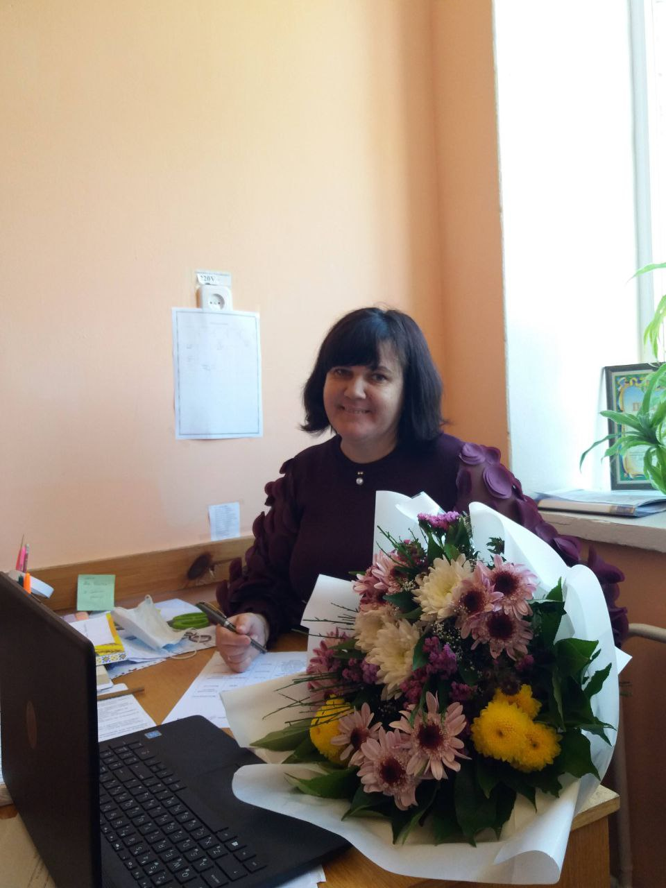
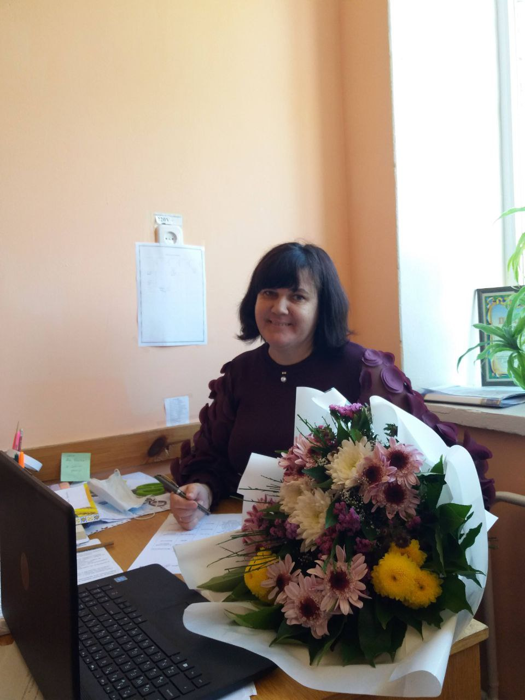
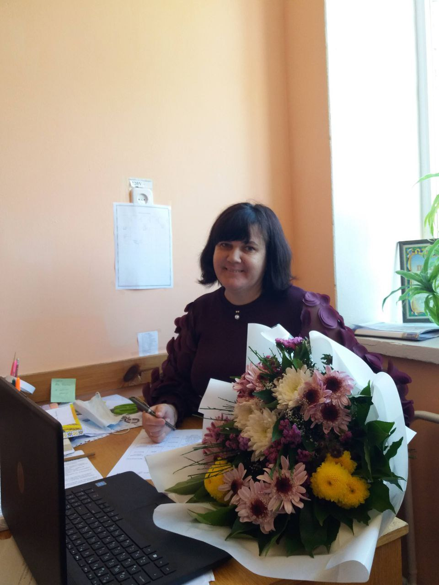

Вежновець Лариса Володимирівна
Практичний психолог Левківського ліцею, спеціаліст вищої категорії
Графік роботи: Понеділок - П'ятниця з 9:00 до 17:00

Вежновець Лариса Володимирівна
Практичний психолог Левківського ліцею, спеціаліст вищої категорії
Графік роботи: Понеділок - П'ятниця з 9:00 до 17:00

Корисні поради для учнів, які допоможуть покращити навчальний процес, розвинути важливі навички та уникнути поширених проблем:
Корисні поради та рекомендації для батьків, щоб допомогти їм краще підтримувати своїх дітей у процесі навчання та розвитку:

Поради та рекомендації для педагогів, які допоможуть створити сприятливу атмосферу в класі та покращити психоемоційний клімат на уроках:
Війна виснажує нас фізично та психологічно. Попри те, що наша психіка здатна адаптуватися під будь-які складнощі, кожен день бойових дій у рідній країні пережити надзвичайно складно. У цей непростий час варто підтримувати себе, рідних та близьких. Це життєво необхідно для того, щоб зберегти здоров’я – фізичне та психологічне.
«Діти у місті» зібрали добірку порад від профільних організацій та психологів, які допоможуть триматися та зберігати спокій.
Під час воєнних дій війна оселяється всередині кожного з нас. Настрій людей у цей непростий час дуже важливий, адже від нього залежать настрої в тилу та підтримка наших захисників.
Під час війни настрій населення постійно змінюється – від оптимізму та натхнення до страху та паніки. Коли стається щось жахливе, люди діють по програмі виживання. Вони діють швидко та планують своє життя лише на кілька годин. Після того, як шок проходить та повертаються базові емоції, людина може піти у страх та відчай, або ж відчути сильну ейфорію.
Втім, ейфорія не може тривати довго, адже ресурси психіки обмежені, тому настрій поступово починає погіршуватися. Якщо ви знаєте про коливання настрою та циклічність цих коливань, вам простіше буде переживати емоційні ями, під час яких особливо гостро відчувається страх та відчай.
Щоб допомагати своїм близьким та країні, важливо самому залишатися в ресурсі. Щоб зберігати життєву енергію, вам необхідно:
Міністерство охорони здоров’я України опублікувало низку рекомендацій щодо того, як діяти під час кризових станів.
Психологічна підтримка дітей у воєнний час надзвичайно важлива, адже дітям необхідно відчувати себе у безпеці. Щоб підтримувати їх, керуйтеся наступними порадами.
Розчарування, страх та відчай виникають тоді, коли не здійснюються очікування. Психологи радять не очікувати, що війна завершиться швидко. Найкраще для психіки – звикнути до нових реалій.
Найкраще, що можуть зробити українці, - вірити в перемогу, але не чекати її, а працювати і жити далі.
Турбуючись про дітей, які страждають від наслідків війни в Україні, Міністерство освіти і науки у співпраці з дитячим психологом підготувало серію інформаційних матеріалів «Психологічна турбота від Світлани Ройз».
Під час військових дій діти є однією з найбільш вразливих категорій і потребують психологічної підтримки. На допомогу батькам та вчителям створено відеоінструкції та інфографіки, які містять рекомендації та практичні поради для батьків, що наразі:
Корекційна робота практичного психолога має важливе значення у сфері психологічної підтримки та розвитку людської особистості. Однією з ключових складових цієї роботи є використання корекційних програм, спрямованих на покращення психічного стану та психосоціального функціонування особистості.
Корекційні програми для роботи практичного психолога розробляються з урахуванням індивідуальних особливостей кожної людини. Вони базуються на принципах психологічної науки та методиках, спрямованих на підвищення психічного здоров'я, розвиток психічних процесів та покращення якості життя.
Корекційна діяльність практичного психолога проводиться на основі діагностики, яка дозволяє визначити особливості розвитку дитини та сформувати програму корекційної роботи.
Корекційна робота може бути проведена як індивідуально, так і в групі. Індивідуальна робота проводиться з дітьми з великими порушеннями психічного розвитку, а групова — з дітьми, які мають схожі проблеми розвитку.
МОН України та ІМЗО розробляють та видають корекційні програми для роботи практичних психологів. Ці програми є науково обґрунтованими та відповідають сучасним вимогам, сприяючи ефективній роботі з дітьми з порушеннями психічного розвитку.
Застосування корекційних програм у роботі практичного психолога дозволяє досягти позитивних змін у психічному та соціальному розвитку дітей, забезпечуючи підтримку психічного здоров'я в процесі навчання та соціалізації.
Психологічна служба керується такими нормативними документами: